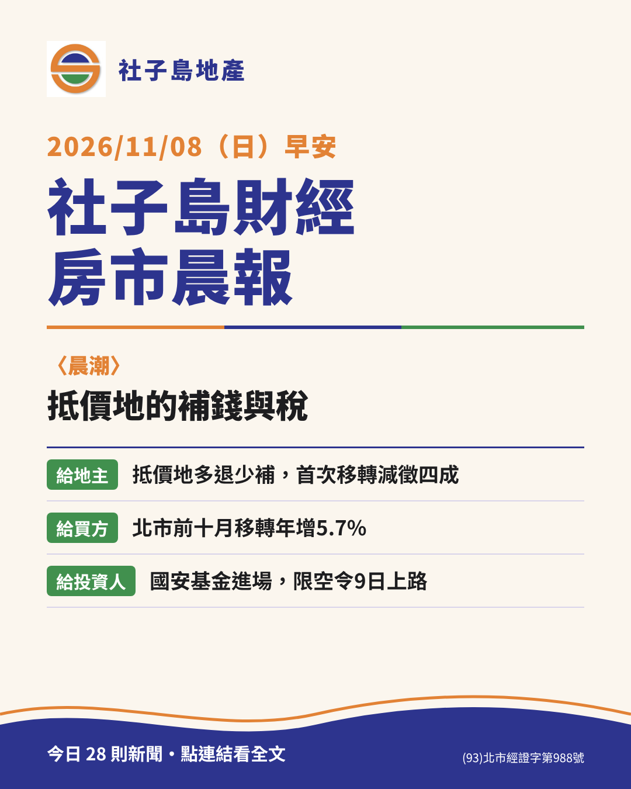

2026/11/08 (日) 早安
社子島財經房市晨報｜抵價地的補錢與稅
今日 28 則財經與房市新聞，依主題分成 8 類，社子島、主商圈與台北市的新聞排在最前面。點標題就能開啟原文。
〈潮汐表〉今天的三道潮水
- 給地主分到的抵價地比應領的多，要按評定地價繳差額地價；比較少，就發給差額地價。領回時免土地增值稅，領回後第一次移轉減徵40%。
- 給買方北市前十月建物移轉20,144棟、年增5.7%；北投交易量成長最多，大安、信義衰退。新北已有五區預售單價逾百萬。
- 給投資人台股上週單週跌5,510點，國安基金第10度進場、限空措施9日上路；新台幣6日盤中一度貶破33元。
〈晨潮〉
抵價地的補錢與稅
昨天在島頭公園，阿公抬頭看著風箏，問我們：「若是分著的地，比阮應該領的較大抑是較細，敢著補錢？領轉來的地，以後若賣掉，稅是按怎算？」今天週日，阿公在堤防上散步，我們就把這兩件事一次說清楚。
先說為什麼會「多」或「少」。抵價地是照街廓和分配區塊一塊一塊劃的，您的權利價值換算出來的面積，很少剛好等於選到的那一塊；地籍測量完成後，還要依實際測量面積再核算一次。所以分到的地，常會比應領的多一點或少一點。
多出來或不夠的部分怎麼辦？依《土地徵收條例》第46條：實際領回抵價地的地價總額，超過應領的權利價值，超過的部分要按區段徵收後評定的地價繳納差額地價；不足的部分，就按同一個地價發給差額地價。簡單說，就是「多退少補」，而且用的是同一把尺。
要特別提醒的是：差額地價經通知限期繳納而沒有繳，主管機關可以移送法院強制執行；沒繳清之前，那塊抵價地不能移轉，也不能設定抵押。所以選區塊的時候，最好先估一下可能要補多少錢，全家先把資金談好，免得地分到了卻卡在手上。
抵價地補錢與繳稅，先記住四件事
- ① 多退少補：分到的比應領的多，繳差額地價；比較少，發給差額地價（《土地徵收條例》第46條）。
- ② 同一把尺：差額都按區段徵收後評定的地價計算，面積以地籍測量的實際面積為準。
- ③ 沒繳清不能動：限期未繳可移送強制執行，繳清前不能移轉或設定抵押。
- ④ 稅的優惠：領回時免土地增值稅；領回後第一次移轉，以領回地價為原地價、減徵40%（《土地稅法》第39條之1）。
再來是稅。依《土地稅法》第39條之1（《平均地權條例》第42條之1 也有相同規定），區段徵收以抵價地補償地價的，領回抵價地時免徵土地增值稅；領回之後第一次移轉，要以實際領回抵價地的地價作為原地價來計算漲價，而且土地增值稅減徵40%。意思是：徵收以前那一段漲價不再追著您算，之後的漲幅，第一次移轉還能少繳四成。地方稅務機關也說明過，把抵價地贈與子女同樣算第一次移轉、一樣減徵。
只是這個減徵只有「第一次」，用掉就沒有了；要先賣、先贈與，還是留著自己用，最好全家一起想清楚再決定。實際稅額，以稅捐稽徵處核定為準。
今天主商圈的新聞，北投靠著輝達效應，前十月交易量成長居北市之冠；台股上週重挫、國安基金明天起進場，往下滑就能看到。
——社子島地產團隊
主商圈：社子島・北士科・關渡洲美平原2 則
社子島本週末無新進度（區段徵收計畫仍在內政部審議）；輝達效應帶動北投前十月交易量成長居北市之冠；關渡洲美平原無新進度
台北市2 則
北市前十月建物移轉20,144棟、年增5.7%，大安、信義衰退；第3季預售申報23案、解約44件
房市走向5 則
新北五區預售單價逾百萬、汐止新莊逼近；信義房價指數季減0.08%進入盤整；專家看年底到明年初是議價時機
都更・合建2 則
北市選戰都更話題延燒：南港都更案卡在審查與造價；候選人7日再提老宅延壽與包租代管
利率・房貸・資金3 則
新台幣6日盤中貶破33元、10月實質有效匯率指數創近半年新低；外資近6個交易日賣超逾6千億元
稅務與法律實務1 則
背景報導：領回抵價地後第一次移轉，土地增值稅減徵40%（呼應今天〈晨潮〉）
高齡與人口3 則
住宿式長照補助每月最高1萬5千元、第二階段申請到12/16；高齡科技住宅論壇；飯店式銀髮宅
今日財經大事10 則
台股上週單週跌5,510點；國安基金第10度進場、限空措施9日上路，台指期夜盤收復4萬點；週末股市休市
〈阿公講古〉
週日傍晚，阿公沿著堤防慢慢走，河面上的光一點一點暗下來，對岸的燈先亮了。
「多退少補，按呢誠清楚，」阿公點點頭：「阮這世人最驚的，就是欠人錢。先算予清楚，心就定矣。」
他停在堤防的轉角，說年輕時颱風一來，就是在這裡和鄰居一起扛沙包；「彼時陣，無人問這塊地是啥人的，逐家攏是為著這个島。」
走到一半，他想起前幾天有人來敲門：「若是這馬有人欲來買阮的地，地賣出去了，以後的抵價地、補償，是歸阮抑是歸買的人？」
阿公的問題，我們明天回答。
〈廟口泡茶區〉
阿公從堤防走下來，到廟口榕樹下坐定，茶已經泡好了。差額地價怎麼估、稅單怎麼看，都可以帶來一起算。
這一週我們聊了買賣、租賃、合建、區段徵收與市地重劃，哪一件最貼近您的心事？
想問問您：這一週阿公問的六個問題裡，哪一個也是您家裡正在煩惱的？打個電話告訴我們，我們把大家最想多聽的，排進下一輪慢慢講。
不急著成交。我們是守在堤邊的人，守著每一塊土地的權益，直到把它交到願意耕耘它的人手上。
📞 歡迎先來電 0922-252-969先通個電話聊聊，再約時間來廟口喝茶。
 掃描 QR code，加 LINE 好友LINE ID：@shezidao💬 加 LINE
掃描 QR code，加 LINE 好友LINE ID：@shezidao💬 加 LINE
社子島地產團隊｜service@shezidao.com.tw
台北市士林區延平北路九段288號
週一至週六 9:30–18:00（週四 9:30–13:30），週日公休📞 來電 0922-252-969
本站由社子島地產開發有限公司經營，為民間不動產資訊網站，非臺北市政府官方網站；政府公告請以臺北市政府與地政局網站為準。
本期新聞由社子島地產團隊自經濟日報、聯合新聞網、自由時報、中時新聞網、工商時報、ETtoday房產雲、ETtoday新聞雲、新頭殼、住展雜誌、民視新聞網、台視新聞網、鏡週刊、風傳媒、Yahoo奇摩新聞、Yahoo股市 等媒體收集，標題照原文，點擊即可開啟原始報導；法規說明僅供參考，實際權利義務以主管機關公告為準。〈晨潮〉〈阿公講古〉為本團隊之參考意見，不構成投資建議，亦不代表支持任何候選人。〈阿公講古〉的阿公，是我們依島上長輩的身影寫成的人物。